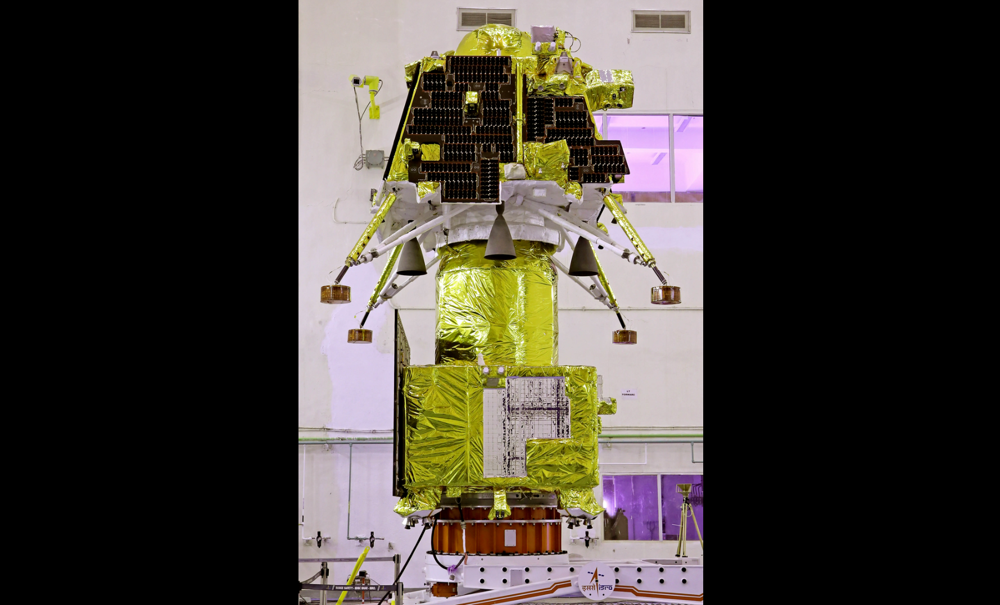
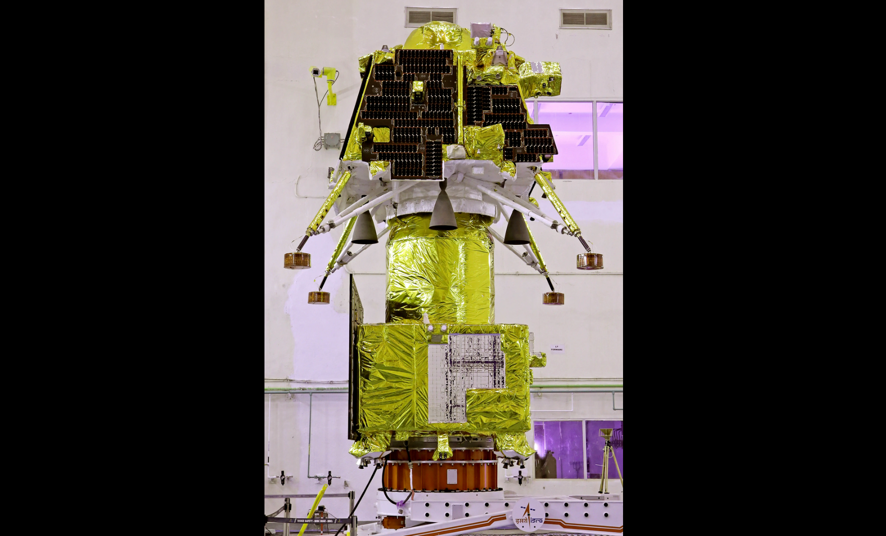
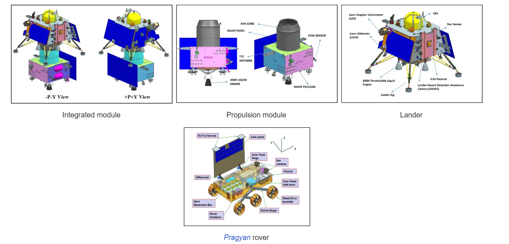
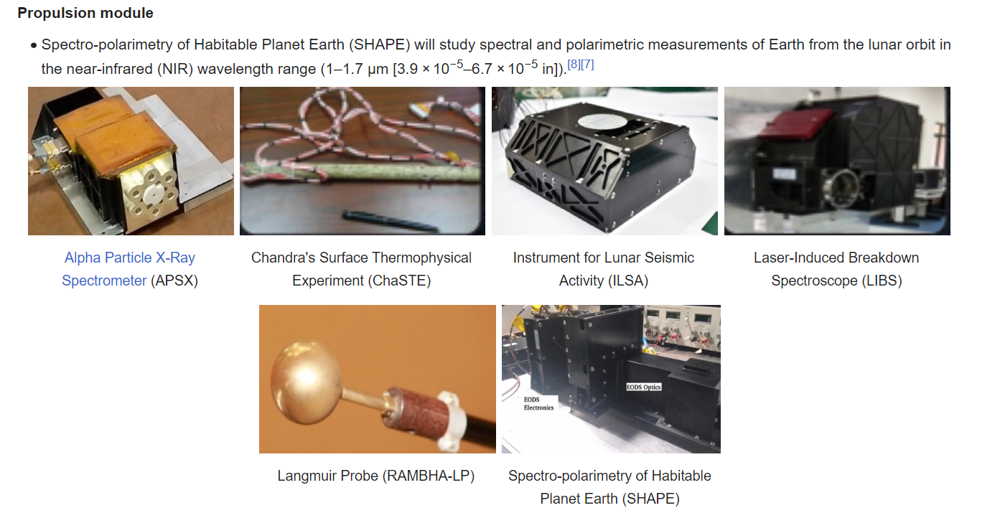
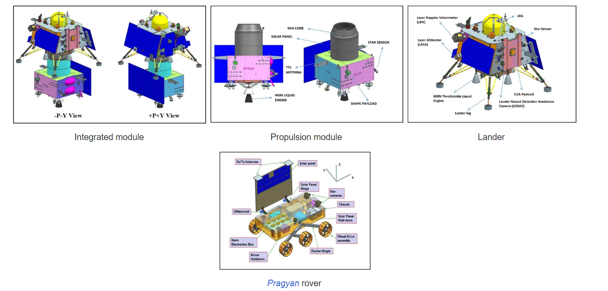
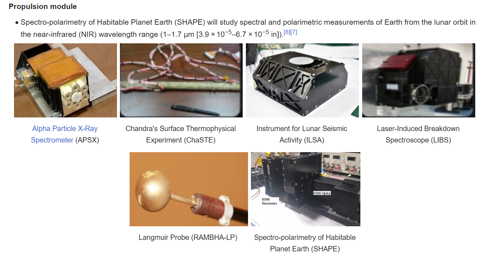

ISRO's mission objectives for the Chandrayaan-3 mission were:
 Getting a lander to land safely and softly on the surface of the Moon. Observing and demonstrating the rover's driving capabilities on the Moon. Conducting and observing experiments on the materials available on the lunar surface to better understand the composition of the Moon.
 Getting a lander to land safely and softly on the surface of the Moon. Observing and demonstrating the rover's driving capabilities on the Moon. Conducting and observing experiments on the materials available on the lunar surface to better understand the composition of the Moon.
Propulsion module
The propulsion module carries the lander and rover configuration to a 100 kilometres (62 mi) lunar orbit. It is a box-like structure with a large solar panel mounted on one side and a cylindrical mounting structure for the lander (the Intermodular Adapter Cone) on top.
Lander The Vikram lander is responsible for the soft landing on the Moon. It is also box-shaped, with four landing legs and four landing thrusters capable of producing 800 newtons of thrust each. It carries the rover and various scientific instruments to perform on-site analysis. The lander for Chandrayaan-3 has four variable-thrust engines with slew rate changing capabilities, unlike Chandrayaan-2's lander, which had five, with the fifth one being centrally mounted and capable only of fixed thrust. One of the main reasons for Chandrayaan-2's landing failure was attitude increase during the camera coasting phase. This was removed by allowing the lander to control attitude and thrust during all phases of descent. Attitude correction rate is increased from Chandrayaan-2's 10°/s to 25°/s with Chandrayaan-3. Additionally, the Chandrayaan-3 lander is equipped with a Laser Doppler Velocimeter (LDV) to allow measuring attitude in 3 directions. The impact legs have been made stronger compared to Chandrayaan-2 and instrumentation redundancy has been improved. It will target a more precise 4 km (2.5 mi) by 4 km (2.5 mi) landing region based on images previously provided by the Orbiter High-Resolution Camera (OHRC) onboard Chandrayaan-2's orbiter. ISRO improved the structural rigidity, increased polling in instruments, increased data frequency and transmission, and added additional multiple contingency systems to improve lander survivability in the event of failures during descent and landing.
Lander The Vikram lander is responsible for the soft landing on the Moon. It is also box-shaped, with four landing legs and four landing thrusters capable of producing 800 newtons of thrust each. It carries the rover and various scientific instruments to perform on-site analysis. The lander for Chandrayaan-3 has four variable-thrust engines with slew rate changing capabilities, unlike Chandrayaan-2's lander, which had five, with the fifth one being centrally mounted and capable only of fixed thrust. One of the main reasons for Chandrayaan-2's landing failure was attitude increase during the camera coasting phase. This was removed by allowing the lander to control attitude and thrust during all phases of descent. Attitude correction rate is increased from Chandrayaan-2's 10°/s to 25°/s with Chandrayaan-3. Additionally, the Chandrayaan-3 lander is equipped with a Laser Doppler Velocimeter (LDV) to allow measuring attitude in 3 directions. The impact legs have been made stronger compared to Chandrayaan-2 and instrumentation redundancy has been improved. It will target a more precise 4 km (2.5 mi) by 4 km (2.5 mi) landing region based on images previously provided by the Orbiter High-Resolution Camera (OHRC) onboard Chandrayaan-2's orbiter. ISRO improved the structural rigidity, increased polling in instruments, increased data frequency and transmission, and added additional multiple contingency systems to improve lander survivability in the event of failures during descent and landing.
Rover
 The Pragyan rover is a six-wheeled vehicle with a mass of 26 kilograms (57 pounds). It is 917 millimetres (3.009 ft) x 750 millimetres (2.46 ft) x 397 millimetres (1.302 ft) in size. The rover is expected to take multiple measurements to support research into the composition of the lunar surface, the presence of water ice in the lunar soil, the history of lunar impacts, and the evolution of the Moon's atmosphere.
Payload
Lander Chandra's Surface Thermophysical Experiment (ChaSTE) will measure the thermal conductivity and temperature of the lunar surface. Instrument for Lunar Seismic Activity (ILSA) will measure the seismicity around the landing site. Langmuir Probe (LP) will estimate the near-surface plasma density over time.
Rover Alpha Particle X-Ray Spectrometer (APXS) will derive the chemical composition and infer the mineralogical composition of the lunar surface. Laser-Induced Breakdown Spectroscope (LIBS) will determine the elemental composition (Mg, Al, Si, K, Ca, Ti, Fe) of lunar soil and rocks around the lunar landing site.

 The Pragyan rover is a six-wheeled vehicle with a mass of 26 kilograms (57 pounds). It is 917 millimetres (3.009 ft) x 750 millimetres (2.46 ft) x 397 millimetres (1.302 ft) in size. The rover is expected to take multiple measurements to support research into the composition of the lunar surface, the presence of water ice in the lunar soil, the history of lunar impacts, and the evolution of the Moon's atmosphere.
Payload
Lander Chandra's Surface Thermophysical Experiment (ChaSTE) will measure the thermal conductivity and temperature of the lunar surface. Instrument for Lunar Seismic Activity (ILSA) will measure the seismicity around the landing site. Langmuir Probe (LP) will estimate the near-surface plasma density over time.
Rover Alpha Particle X-Ray Spectrometer (APXS) will derive the chemical composition and infer the mineralogical composition of the lunar surface. Laser-Induced Breakdown Spectroscope (LIBS) will determine the elemental composition (Mg, Al, Si, K, Ca, Ti, Fe) of lunar soil and rocks around the lunar landing site.

Animation of Chandrayaan-3

Around the Earth – Orbit raising phase

Around the Earth

Around the Moon
Chandrayaan-3's Path · Earth · Moon